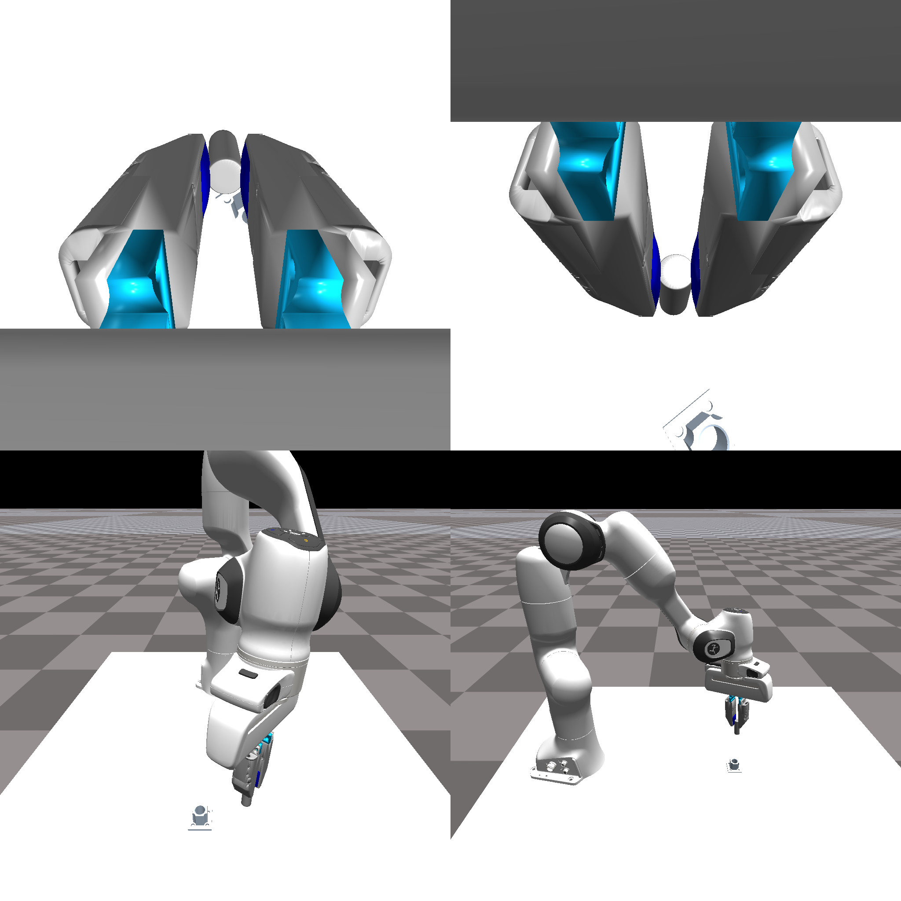
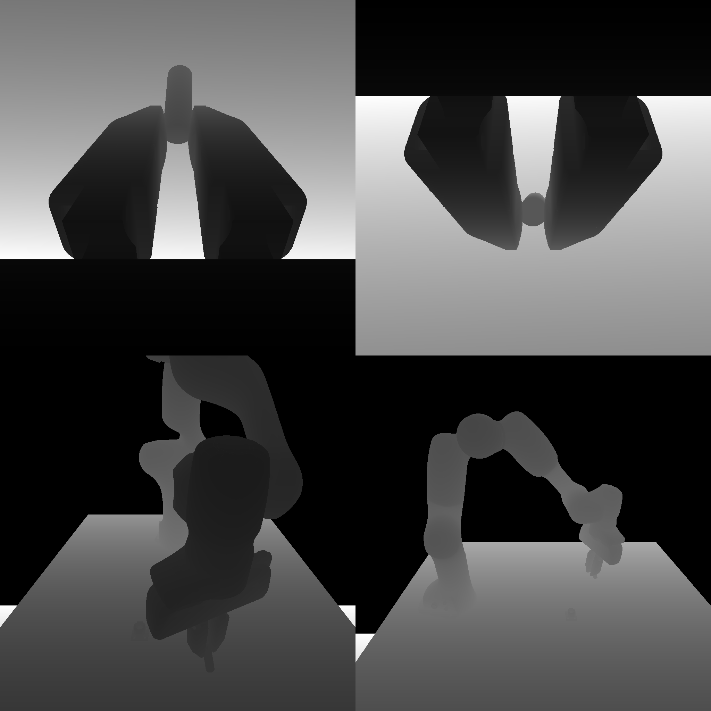
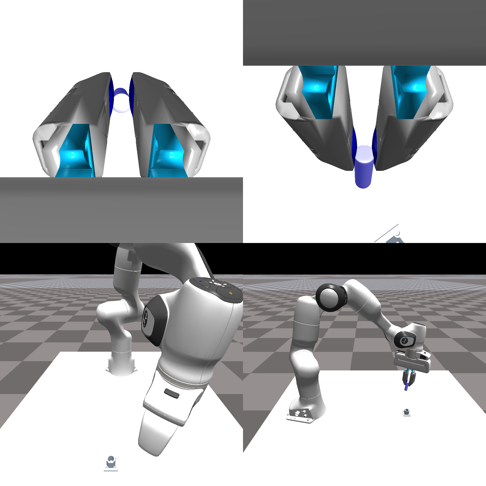
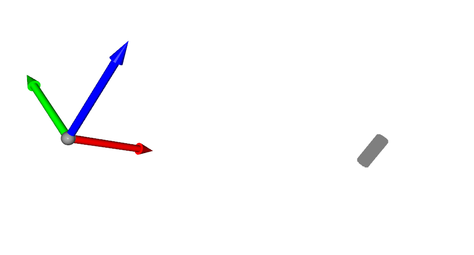

2. Understanding how cameras work in IsaacGymEnv
2.1 Camera creation and access
Cameras are created in isaacgym using gym.create_camera_sensor. where gym = gymapi.acquire_gym(). This is embedded into isaacgymenvs/tacsl_sensors/tacsl_sensors.py in CameraSensor.setup_env_cameras.
def setup_env_cameras(self, env_ptr, camera_spec_dict):
"""
Set up environment cameras.
Args:
env_ptr: Pointer to the environment.
camera_spec_dict (dict): Dictionary of camera specifications.
Returns:
dict: Dictionary of camera handles.
"""
camera_handles = {}
for name, camera_spec in camera_spec_dict.items():
camera_properties = gymapi.CameraProperties()
... # setup camera_properties using camera_spec
camera_handle = self.isaac_gym.create_camera_sensor(env_ptr, camera_properties)
camera_handles[name] = camera_handle
print(f'Created camera {name} with handle {camera_handle} for env {env_ptr}')
if camera_spec.is_body_camera:
... # extra handling if camera is placed on a rigid body that moves
else:
transform = gymapi.Transform(gymapi.Vec3(*camera_spec.camera_pose[0]),
gymapi.Quat(*camera_spec.camera_pose[1]))
self.isaac_gym.set_camera_transform(camera_handle, env_ptr, transform)
# sets camera transform in the environment
# Return a dictionary of camera handles for each camera
return camera_handles
Now the real question is how do you get camera_spec_dict? And what is inside of camera_spec?
We understand this by looking at calls of setup_env_cameras. This is also located in CameraSensors.create_camera_actors:
class CameraSensor:/home/andang/workspace/isaac/IsaacGymEnvs/isaacgymenvs/camera_fused.png
def create_camera_actors(self, camera_spec_dict, env_idx):
...
env_camera_handles = self.setup_env_cameras(env_ptr, camera_spec_dict)
...
and create_camera_actors is called in tacsl_env_insertion at _create_sensors:
def _create_sensors(self):
self.camera_spec_dict = dict()
self.camera_handles_list = []
self.camera_tensors_list = []
if self.cfg_task.env.use_isaac_gym_tactile:
tactile_sensor_configs = self._compose_tactile_image_configs()
self.set_compliant_dynamics_for_tactile_sensors(tactile_sensor_configs)
camera_spec_dict_tactile = self.get_tactile_rgb_camera_configs(tactile_sensor_configs)
self.camera_spec_dict.update(camera_spec_dict_tactile)
if self.cfg_task.env.use_camera:
camera_spec_dict = self.get_regular_camera_specs()
self.camera_spec_dict.update(camera_spec_dict)
if self.camera_spec_dict:
# tactile cameras created along with other cameras in create_camera_actors
camera_handles_list, camera_tensors_list = self.create_camera_actors(self.camera_spec_dict)
self.camera_handles_list += camera_handles_list
self.camera_tensors_list += camera_tensors_list
... # just more code for shear stuff
We see that self.camera_spec_dict is constructed by adding two dicts from self.get_regular_camera_specs() and self.get_tactile_rgb_camera_configs(tactile_sensor_configs).
Since I am more concerned with visual cameras and not tactile cameras, I will focus on get_regular_camera_specs.
class TacSLSensors(TactileFieldSensor, TactileRGBSensor, CameraSensor):
def get_regular_camera_specs(self):
camera_spec_dict = {}
if self.cfg_task.env.use_camera:
camera_spec_dict = {c_cfg.name: c_cfg for c_cfg in self.cfg_task.env.camera_configs}
return camera_spec_dict
I used pdb.set_trace() to figure out what default cameras are set up for tacsl. The default camera configs defined by camera_spec_dict are shown as:
{
'wrist': {
'name': 'wrist',
'is_body_camera': True,
'actor_name': 'franka',
'attach_link_name': 'panda_hand',
'image_size': [1024, 1024],
'image_type': 'rgb',
'horizontal_fov': 75.0,
'camera_pose': [[0.045, 0, 0.04], [0.5, 0, 0.866, 0]]
},
'wrist_2': {
'name': 'wrist_2',
'is_body_camera': True,
'actor_name': 'franka',
'attach_link_name': 'panda_hand',
'image_size': [1024, 1024],
'image_type': 'rgb',
'horizontal_fov': 75.0,
'camera_pose': [[-0.045, 0, 0.04], [0.866, 0, 0.5, 0]]
},
'front': {
'name': 'front',
'is_body_camera': False,
'actor_name': None,
'attach_link_name': None,
'image_size': [1024, 1024],
'image_type': 'rgb',
'horizontal_fov': 75.0,
'camera_pose': [[0.8, 0.0, 0.5], [-0.258819045, 1.58480958e-17, 0.965925826, 5.91458986e-17]]
},
'side': {
'name': 'side',
'is_body_camera': False,
'actor_name': None,
'attach_link_name': None,
'image_size': [1024, 1024],
'image_type': 'rgb',
'horizontal_fov': 75.0,
'camera_pose': [[0.3, -0.6797, 0.7099], [-0.1830127, 0.1830127, 0.6830127, 0.6830127]]
}
}
As we can see, there are 4 cameras. There are 2 wrist cameras and 2 external cameras. I’ll visualize what these cameras output using opencv.
By the way, these camera configs are located in isaacgymenvs/cfg/task/TacSLTaskInsertion.yaml. We can add cameras and modify there.

Note that the current setup uses only RGB.
2.2 Getting Object Point Clouds from Cameras
There is no code that uses depth in this codebase, I’m going to change that. First step is to add depth image and segmentation cameras. I modify isaacgymenvs/cfg/task/TacSLTaskInsertion.yaml to add depth and segmentation cameras. Here’s an example:
- name: wrist
is_body_camera: True
actor_name: franka
attach_link_name: panda_hand
image_size: [1024, 1024]
image_type: all
horizontal_fov: 75.0
camera_pose: [[0.045, 0, 0.04], [0.5, 0, 0.866, 0]]
We change image_type to all to get RGB, depth, and segmentation images. This now means we have to modify isaacgymenvs/tacsl_sensors/tacsl_sensors.py to handle the new image types.
We start off with create_tensors_for_env_cameras in CameraSensor:
def create_tensors_for_env_cameras(self, env_ptr, env_camera_handles, camera_spec_dict):
env_camera_tensors = {}
for name in env_camera_handles:
camera_handle = env_camera_handles[name]
...
elif camera_spec_dict[name].image_type == 'all':
# obtain camera tensor
camera_tensor = self.gym.get_camera_image_gpu_tensor(self.sim, env_ptr, camera_handle,
gymapi.IMAGE_COLOR)
camera_tensor_depth = self.gym.get_camera_image_gpu_tensor(self.sim, env_ptr, camera_handle,
gymapi.IMAGE_DEPTH)
camera_tensor_seg = self.gym.get_camera_image_gpu_tensor(self.sim, env_ptr, camera_handle,
gymapi.IMAGE_SEGMENTATION)
torch_camera_tensor = gymtorch.wrap_tensor(camera_tensor)
torch_camera_tensor_depth = gymtorch.wrap_tensor(camera_tensor_depth)
torch_camera_tensor_seg = gymtorch.wrap_tensor(camera_tensor_seg)
env_camera_tensors[name] = torch_camera_tensor
env_camera_tensors[name + '_depth'] = torch_camera_tensor_depth
env_camera_tensors[name + '_seg'] = torch_camera_tensor_seg
continue
...
return env_camera_tensors
We can still keep env_camera_tensors structure mostly the same but just add extra keys for depth and segmentation. Next up, we modify get_camera_image_tensors_dict in CameraSensor to handle the new image types:
def get_camera_image_tensors_dict(self):
"""
Get the dictionary of camera image tensors.
Returns:
dict: Dictionary of camera image tensors.
"""
# transforms and information must be communicated from the physics simulation into the graphics system
if self.device != 'cpu':
self.gym.fetch_results(self.sim, True)
self.gym.step_graphics(self.sim)
self.gym.render_all_camera_sensors(self.sim)
self.gym.start_access_image_tensors(self.sim)
camera_image_tensors_dict = dict()
for name in self.camera_spec_dict:
camera_spec = self.camera_spec_dict[name]
... # other cases for handling image types
elif camera_spec['image_type'] == 'all':
## RGB save
num_channels = 3
camera_images = torch.zeros(
(self.num_envs, camera_spec.image_size[0], camera_spec.image_size[1], num_channels),
device=self.device, dtype=torch.uint8)
for id in np.arange(self.num_envs):
camera_images[id] = self.camera_tensors_list[id][name][:, :, :num_channels].clone()
camera_image_tensors_dict[name] = camera_images
## Depth save
num_channels = 1
camera_images = torch.zeros(
(self.num_envs, camera_spec.image_size[0], camera_spec.image_size[1]),
device=self.device, dtype=torch.float)
for id in np.arange(self.num_envs):
# Note that isaac gym returns negative depth
# See: https://carbon-gym.gitlab-master-pages.nvidia.com/carbgym/graphics.html?highlight=image_depth#camera-image-types
camera_images[id] = self.camera_tensors_list[id][name][:, :].clone() * -1.
camera_images[id][camera_images[id] == np.inf] = 0.0
camera_image_tensors_dict[name + '_depth'] = camera_images
## Segmentation save
num_channels = 1
camera_images = torch.zeros(
(self.num_envs, camera_spec.image_size[0], camera_spec.image_size[1]),
device=self.device, dtype=torch.int32)
for id in np.arange(self.num_envs):
camera_images[id] = self.camera_tensors_list[id][name + '_seg'][:, :].clone()
camera_image_tensors_dict[name + '_seg'] = camera_images
continue
... # other cases for handling image types
return camera_image_tensors_dict
We add the depth and segmentation images to the camera_image_tensors_dict dictionary.
This immediately translates to us getting depth and segmentation images from the cameras when we call it in our observation function. Here’s a visual of normalized depth:

Our segmentation images will just be zero at this point without further modification. We need to add self.gym.set_rigid_body_segmentation_id(env_ptr, plug_handle, 0, 1) in tacsl_env_insertion.py to set what should be segmented.
With this, we can visualize the segmentation:

We also make sure self.image_obs_keys in tacsl_task_insertion.py does not include the new depth and segmentation keys by setting the following in TacSLTaskInsertion.__init__:
self.image_obs_keys = [k for k, v in self.obs_dims.items() if len(v) > 2 and 'force_field' not in k and not k.endswith('_depth') and not k.endswith('_seg')]
** There was a lot of pain involved in getting intrinsics/extrinsics to work. **
- IsaacGym does not support intrinsic camera parameters!
- We had to calculate our own intrinsics from projection matrix.
- Their camera convention is messed up. Camera needs extra arbitrary rotations and flips to get the right orientation.
- Getting point clouds was a huge hassle in the codebase.
- Using only segmentations currently.
